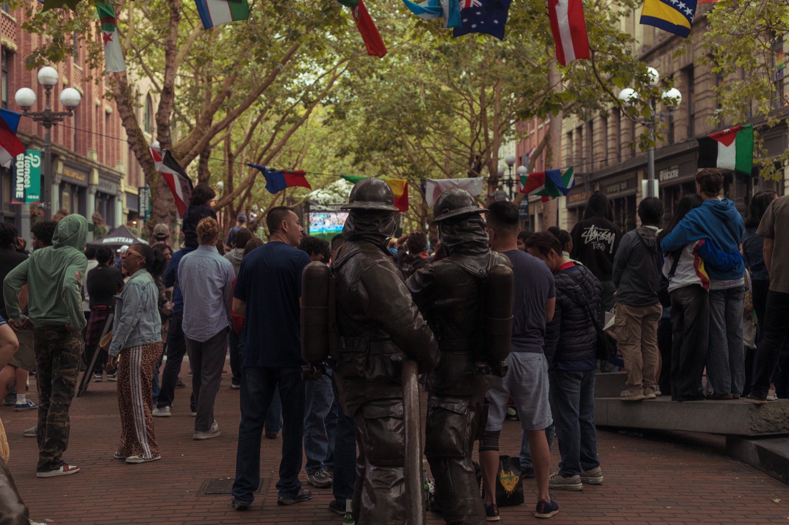
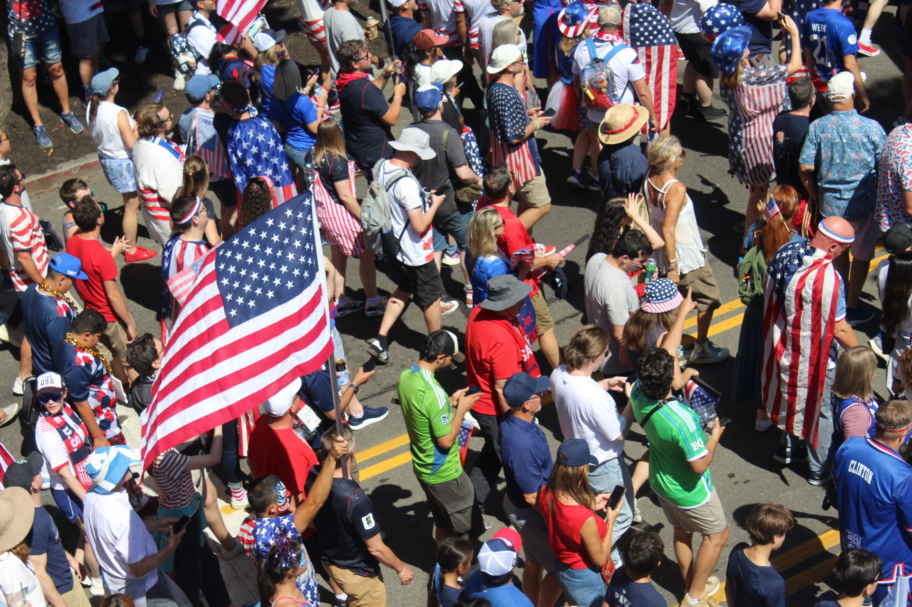
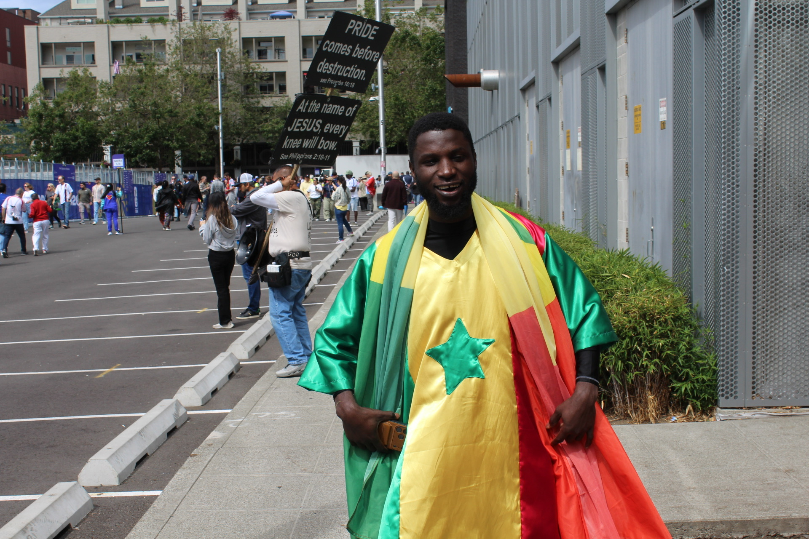

Draped in Meaning: Observing the Connection between Flags, Fandom, and Identity at Seattle's FIFA World Cup Matches
Waved or worn, frayed or torn, the flag has remained a symbol of ethnic, cultural, religious, regional, national, or political identity from antiquity to the present day. Flags have carried meaning transcendent of linguistic barriers, signifying surrender, resistance, power, solidarity or division depending on the context and audience. Symbolic Interaction theory posits that meaning is not inherent, but instead derived, from symbols through an interpretive process that is continuously constructed, negotiated, and reinterpreted through social interaction (cite something here). To understand the nuances of the flag as a symbol one must first consider how symbols construct meaning based upon the situation in which they are demonstrated and perceived, and symbolic interactionism provides a framework through which to analyze the meaning created through interaction with the flag instead of simply just discussing the symbol itself.
Judith Butler's Gender Performativity Theory argues that gender identity is constituted through the repeated expression of actions that are said to be associated with a certain identity, a claim that has been used by scholars of identity to posit that identity is socially constructed through action. Performativity, as Butler understands it, positions actions such as wearing or flying a flag as actively constituting identity rather than expressing it. Performativity theory understands the act of wearing a flag not as an expression of a pre-existing identity, but as one of the very acts through which that identity is produced. One of the theory's key propositions is that identity is not fixed, but continuously reinforced and renegotiated through action, a concept central to this photo essay's analysis.
The World Cup has historically been lauded as the most significant global sporting event, with fans from around the world filling pubs, crowding stadium plazas, and overtaking city streets in a sport-crazed fervor. When Canada, Mexico, and the United States were selected to host the 23rd edition of the men's tournament, Seattle, Washington was chosen as one of eleven U.S. host cities. The photos and observations in this essay were collected by University of Washington students participating in the Summer Institute in the Arts and Humanities (SIAH) research program, drawn from World Cup matches and watch parties held in Seattle. This essay explores the role of the flag in the identity expression of World Cup fans through the medium of visual anthropology. Symbolic interactionism holds that symbols function as a communicative code, their meaning produced not by the object itself but through interaction with an audience. Performativity theory extends this claim further, postulating that identity is not simply held by an individual and then displayed, but completed only through the presence of an audience to interpret it. For a flag performs nothing in isolation, its colors, patterns, and history are entirely dependent on being seen, recognized, and read by someone else. Rather than resolving the flag's meaning on the reader's behalf, this essay is structured through sequential visuals and captioning to place the reader into that same interpretive relationship, as the necessary audience through which the performance completes itself.

Draped in red, black and yellow, the Belgian red devils fans march down to Lumen Field, holding a banner promoting the slogan "WE ARE BELGIUM". As a nation with three official languages, the Belgian national anthem is traditionally sung by fans in three and sometimes even four languages, with English and a neutral language (Rijnen, 2026). Instead of emphasizing fragmentation, Belgian politicians have long used global soccer tournaments to reduce linguistic divisions through slogans that promote national unity (Banks, 2016).

A parade of United States Men's national team supporters march down to Lumen Field in anticipation for the host nation's Round of 16 match with Belgium, many proudly don attire with stars and stripes on full display. In the United States, there is perhaps no national symbol greater than the flag, given names such as Old Glory, the Star Spangled Banner, and the Red White and Blue. Indeed, the United States flag is perhaps the greatest rhetorical tool for national pride, used to signify ideals such as the American dream, freedom, patriotism, and pride in the American lifestyle. Those who do not stand for the flag are deemed traitors, disrespecting the American way of life, students are taught from the time they enter Kindergarten to place their hand over their hearts and offer a pledge of allegiance to the piece of fabric that hangs in every classroom, and the U.S. Supreme Court even ruled that burning the flag is an act of "symbolic speech". The complex relationship between the flag and the nation it represents is accentuated by international sporting competitions, as demonstrations of national pride are often equated with rhetorical sentiments of U.S. exceptionalism, and nationalism, leaving some fans apprehensive about embracing the symbol. The nationalist rhetoric associated with the U.S. international sports tournaments has been well documented, and even found to have a causal relationship with support for uncritical patriotism and militarism in a case study examining the effect of advertisements displaying nationalist rhetoric before World Cup matches (Atwell Seate, et al., 2017). In the United States, the national flag is a complex symbol that can represent loyalty to the American identity and belief system, support for a national sports team, or nationalist sentiments of U.S. exceptionalism, all depending on the context and audience.

A Senegalese fan wears a men's Kaftan, a traditional West African robe, designed in the style of the Senegal national flag, which he also drapes over his shoulders. Kastner (2018), notes the interconnected nature of fashion and identity in Senegalese culture, arguing that "The human body, fashion, and questions of personhood and identity are intimately interwoven" (Kastner, 2018). In contrast to Western conceptions of fashion where the body is expected to conform to mass-produced trends, Kastner notes that West African fashion is dynamic, embodied and grounded in cultural practices, thus the body and garment are inherently connected as integral aspects of identity.

Mexican soccer fans wave several national flags among a watch party crowd in Occidental square during the host country's match with England. In the background, the star spangled banner observes the pandemonium from above. Mexico has long been cited as the largest diaspora community of football fans in the U.S., with over 40 million estimated Mexican Americans (Corchado, 2026). Despite the sizable diaspora population, Immigration Customs Enforcement (ICE) intensified its efforts to deport "violent criminals" from Latino communities during the tournament, with reports noting raids on Los Angeles neighborhoods, Home Depot parking lots, taco and fruit stands and car washes (Corchado, 2026). In contrast to the Trump administration's messaging, the Mexican Consulate in Los Angeles reported that of the 2,154 Mexicans detained since June 6, 2025, 46% reported having lived in the U.S. for over ten years, and 36% had U.S.-born children (Corchado, 2026). Yet in spite of the imminent threat associated with displaying Mexican nationality, fans packed watch parties and stadiums, proudly wearing jerseys, waving flags, and cheering on El Tri.

In pioneer square, watchparty onlookers brandish Palestinian flags during a round of 16 match between Mexico and England. Palestine has been a recognized FIFA country since 1998, and despite not qualifying for the 2026 World Cup tournament, many watch parties across the country report the flag being a prevalent symbol. For many fans, the flag serves as an emblem of solidarity, an embodied act of protest against FIFA's refusal to ban Israel from international competitions despite banning Russia since 2022 for its full-scale invasion of Ukraine (Ahmad, 2026). As fans from all over the globe congregate in public spaces to watch the world's largest sports tournament, many activists have used the platform to re-direct attention to the ongoing genocide in Palestine.
Bibliography
- Ahmad, M. (2026, July 18). 'You can't display that': Palestinian flags become a target at US World Cup games. Middle East Eye. https://www.middleeasteye.net/news/world-cup-2026-palestine-flags-become-target-us-based-games
- Atwell Seate, A., Ma, R., Iles, I., McCloskey, T., & Parry-Giles, S. (2017). "This is who we are!" National identity construction and the 2014 FIFA World Cup. Communication & Sport, 5(4), 428–447. https://doi.org/10.1177/2167479516636638
- Banks, M. (2016, April 12). National football team unites a divided Belgium. The Brussels Times. https://www.brusselstimes.com/37232/national-football-team-unites-a-divided-belgium
- Corchado, A. (2026, July 10). Amid uncertainty at home, Mexican Americans reconnect with roots during World Cup. Houston Public Media. https://www.houstonpublicmedia.org/articles/news/sports/world-cup/2026/07/10/556655/amid-uncertainty-at-home-mexican-americans-reconnect-with-roots-during-world-cup/
- Kastner, K. (2018). Making fashion, forming bodies and persons in urban Senegal. Africa Development, 43(1), 5–20.
- Rijnen, S. (2026, July 6). Belgium's complicated language politics, explained. Politico. https://www.politico.com/live-updates/2026/07/06/world-cup-2026/sam-liccardo-world-cup-caucus-corruption-fifa-trump-balogun-red-card-00988441